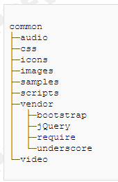

基于代码可读性、可维护性以及性能或兼容性等方面的考虑，我们制订了一系列编码规范，我们强烈推荐大家在平时的日常工作中执行这些规范，这对于我们的代码质量以及团队协作是非常有帮助的。新加入团队的员工，可以通过阅读代码规范来尽快熟悉我们的工作。
规范分为两种， 强制 的和 建议 的， 期望团队中的每个人都能 严格 地执行 强制 的条目 ；出于种种考虑（较难执行、比较难以判断是否达到了执行条件等等），有一些规范被列为了 建议 的，但这并不表明它们不重要，我们仍然强烈推荐大家在日常编码中对这些 建议 的 规范条目一视同仁。
强制 的条目，会使用以下格式， 使用 鲜艳的红色 来 提醒大家必须注意它们， 如：
嵌套元素应该缩进
建议 的条目。虽然 不强制这么做，但这种做法更为推荐。如：
建议： 对于属性的定义，确保全部使用双引号，绝不要使用单引号
在规范中，对于一些规则会有说明，这些说明中可能引用了官方的文档或标准规范。 引用使用以下格式：
对规则增加的额外说明，要需要强调的内容。注释或说明使用以下格式：
注： 不管有多少人共同参与同一项目，一定要确保每一行代码都像是同一个人编写的。
优秀的示例、 或 推荐的 写 法 ，使用以下格式 （蓝色） ：
推荐：
<head>
<title>The right way.</title>
</head>
错误的示例、不推荐的做法 ，使用以下格式（暗红色）
不推荐：
<head>
<title>The wrong way .
</head>
永远遵循同一套编码规范
不管有多少人共同参与同一项目，一定要确保每一行代码都像是同一个人编写的。
新建一个 common 目录 ，存放所有的公共组件
第三方资源统一管理与存放
common /vendor 目录统一存放所有的第三方资源。 该目录下以项目划分子目录，比如： common /vendor/bootstrap 存放 bootstrap 项目的所有资源文件。 比如：
common / vendor/ bootstrap -3.3.5 /bootstrap.min.css
common / vendor/ jQuery -1.11.2 /jquery -1.11.2 .min .js
注：文件 目录 名中必须带版本号 ，文件名是尽量带版本号
所有引入的第三方库，需要备案才能使用。 我们会在一个统一的地方（比如 wiki 和帮助文档 ）记录所有引入的 第三方库 的版本及 相关 信息。
所有引入的第三方库，只能放在这一个地方。
自有资源各自独立存放
common /image s 为公共的图片库
common /icon s 为公共的图标库
common /video 为公共的视频库
common /audio 为公共的音频库
common / scripts 为自有开发或维护的，公共的 j ava s cript
common / styles 为自有开发或维护的，公共的 styles
注：所谓公共的，就是在两个或两个以上公共模块使用的资源。
common /sample s 为范例目录

非公共资源均以功能模块为单位
每个 模块对应一个 小的 独立的功能单元 ，比如 权限管理系统 中的系统管理、用户信息管理 。 每个模块内部，均有自己模块所用的资源，比如：
u sermanagement . js 系统管理模块内的角色管理功能单元用到的 js
usermanagement.css 系统管理模块内的角色管理功能单元用到的 css
H tml 文件如果不是特别多的话，统一放在根目录下。
目录组织的原则是“扁平化”，即能用一级目录解决的问题，就不要创建额外的子目录，导致路径过“深”。
使用英文，不要使用拼音或数字
如果实在无法用英文表述，则该名字需要在统一的地方申请和记录（ wiki ）， 以便日后查阅。 并且，在该文件头部，使用标准的 html 注释来说明这个文件名对应的含义。
绝 对 不允许使用拼音的缩写，比如 qxgl xt .html 等 。
请确保文件命名总是以字母开头而不是数字。
建议： 尽量使用单个单词， 区分单复数
如果 有复数结构时，要采用复数命名法 。 例： scripts, styles, images, models
全部采用小写方式， 以中划线分隔
推荐的文件名
account- model.js
retina - sprites.css
error - report.htm l
注 ：这种命名方式符合 W3C 对资源的路径解析规范，也是目前太多数流行开源框架的做法，比如 bootstrap- datapicker.min.css 。
注： html 文件后缀统一为： *.htm l
资源的字母名称必须全为小写，这是因为在某些对大小写字母敏感的操作系统中，当文件通过工具压缩混淆后，或者人为修改过后，大小写不同而导致引用文件不同的错误，很难被发现。
不推荐
MyScript.js
myCamelCaseName.css
i_love_underscores.html
1001-scripts.js
自定义属性以data-开头
所有自定义属性建议以 data- * 开头 ，多个单词以 中划线 分隔，例如 ：
data-valid-type
data-field-name
其 目的是为了兼容 HTML5 ，并且 jQuery 对此也有着更好的支持 。
增加必要的注释
对于复杂的、特殊的 HTML 片段（比如一个悬浮的 div ，内部包含大块的 html ），建议增加注释，注释的方式 参照 W3C 规范，即 <!-- ... 注释的文本 … --> 。
使用4个空格的缩进
嵌套元素应当缩进一次（即4个空格）
对于属性的定义，确保全部使用双引号，不要使用单引号。
推荐的规范良好的例子
<!DOCTYPE html>
<html>
<head>
<title>Page title</title>
</head>
<body>
< img src ="images/company- logo.png " alt="Company">
<h1 class="hello-world">Hello, world!</h1>
</body>
</html>
不要在自闭合元素的尾部添加斜线
HTML 中的自闭合标签有 < br >, <hr>, <link>, <meta>, <input>, < img >, <base>, <!DOCTYPE> 等等。
不推荐：
<input type= ” text ” class= ”…” />
< img src = ” xx/ xxx.png ” />
< br />
<input type= ” button ” … > … </input>
不要省略可选的结束标签。
例如 </ li > 或 </body> 。
HTML5 D octype 声明
为每个 HTML 页面的第一行添加标准模式（ standard mode ）的声明，这样能够确保在不同浏览器中拥有一致的展现。
推荐
<!DOCTYPE html>
<html>
<head>
</head>
</html>
明确字符编码
通过明确声明字符编码，能够确保浏览器快速并容易的判断页面内容的渲染方式。这样做的好处是，可以避免在 HTML 中使用字符实体标记（ character entity ），从而全部与文档编码一致（一般采用 UTF-8 编码）。
推荐
<head>
<meta charset ="UTF-8">
</head>
引入 CSS 和 JavaScript 文件时不需要指定type
根据 HTML5 规范，在引入 CSS 和 JavaScript 文件时一般不需要指定 type 属性，因为 text/ css 和 text/ javascript 分别是它们的默认值。 甚至在老旧版本的浏览器中这么做也是安全可靠的。
<!-- External CSS -->
<link rel =" stylesheet " href ="code- guide.css ">
<!-- In-document CSS -->
<style>
/* ... */
</style>
<!-- JavaScript -->
<script src ="code- guide.js "></script>
建议： 标签的属性按顺序排列
HTML 属性应当按照以下给出的顺序依次排列，确保代码的易读性。由于标签较多，记忆起来比较困难，所以，只对 class ， id ， name 及 data-* 属性的顺序做强制要求，其它为建议。
class
id, name
data-*
src , for, type, href
title, alt
aria-*, role
class 用于标识高度可复用组件，因此应该排在首位。 id 用于标识具体组件，应当谨慎使用（例如，页面内的书签），因此排在第二位。
推荐 写法：
<a class="..." id="..." data-modal="toggle" href ="#">
Example link
</a>
<input class="form-control" type="text">
< img class= ” avatar ” src ="..." alt="...">
布尔型属性可以在声明时不赋值
XHTML 规范要求为其赋值，但是 HTML5 规范不需要。
如果一定要为其赋值的话，请参考 WhatWG 规范：
简单来说，就是不用赋值。
正确的写法，布尔型属性如 disabled ， checked 等，不需要写成 disabled= ” disabled ” 或 disabled= ” true ” ，比如：
推荐写法：
<input type="text" disabled >
<input type="checkbox" value="1" checked >
<select>
<option value="1" selected >1</option>
</select>
减少标签的数量和层次
编写 HTML 代码时，尽量避免多余的父元素。很多时候，这需要迭代和重构来实现。请看下面的案例：
不推荐
<span class="avatar">
< img src ="...">
</span>
推荐
< img class="avatar" src ="...">
标签越小越好，嵌套层次越少越好。
不要在HTML代码中出现CSS样式或JS片段
浏览器是按标签来解析的，每解析一段标签，就显示这段标签的内容。如果标签引入了外部文件（如图像），则会一边继续解析其他标签，一边继续下载该外部文件，直到载入完毕。
但浏览器在解析 script 标签时，由于 JavaScript 可能会改变浏览器内容，会停止所有页面元素的载入，直到这段 script 代码执行完毕。如果这个 script 标签引入了一个来自外部服务器的 js 文件，而这个服务器访问速度很慢，那么页面上其他元素便都得等到这个 js 文件载入并执行完毕才能继续载入。
HTML 的书写者，应当不基于任何样式或 js 来表达他想实现的功能。
推荐方式为，页面相关的 js 和 css 使用和页面相同的文件名，例如：
推荐
market/finance.htm
market/ js/ finance.js
market/ css/finance.css
禁止 img 的 src 取值为空
src 取值为空，会导致部分浏览器重新加载一次当前页面。 延迟加载的图片也要增加默认的 src 。
如果 img 的图片需要在运行时才能确认，则 src 应指定为 一个 公共的默认占位 图片。
建议： 使用 推荐的HTML模板
在 Head 中 存 放全局的设置 ， 所有页面元素均在 Body 中实现， 使用带语义的 自定义标签 来提高 html 代码可读性 。
Header 、 Footer 、 main 和 Section 都是 html5 引入的标签。
推荐
<header>
...
</header>
<main id="content" role="main">
<section class="a">
...
</section>
<section class="b">
...
</section>
</main>
<footer class="page-footer">
...
</footer>
在body尾部加载 js 脚本
出于性能考虑，脚本异步加载很关键。一段脚本放置在 <head> 内，比如 <script src =" main.js "></script> ，其加载会一直阻塞 DOM 解析，直至它完全地加载和执行完毕。这会造成页面显示的延迟。特别是一些重量级的脚本，对用户体验来说那真是一个巨大的影响。
注： 异步加载脚本可缓解这种性能影响。如果只需兼容 IE10+ ，可将 HTML5 的 async 属性加至脚本中，它可防止阻塞 DOM 的解析，甚至你可以将脚本引用写在 <head> 里也没有影响。
推荐
<html>
<head>
<link rel =" stylesheet " href =" main.css ">
</head>
<body>
<!-- body goes here -->
<script src =" main.js " ></script>
</body>
</html>
只用小写字母和破折号 命名class 和ID
不是下划线，也不是驼峰命名法 。 例如， . btn 和 . btn -danger 。
避免过度任意的简写
. btn 代表 button ，但是 .s 不能表达任何意思。
class 名称应当尽可能短，并且意义明确。
使用有意义的名称，不能使用拼音
使用有组织的或目的明确的名称，不要使用拼音，尤其是拼音首字母缩写。
使用注释
使用 /* … */ 作为 唯一 的方式，来包裹注释的内容。
用4个空格来缩进
将单独的选择器单独放在一行
为选择器分组时，会有多个选择器共用一套 style ，那么应该把单独的选择器单独放一行。例如：
不推荐
.selector, .selector-secondary, .selector[type=text] {
padding:15px;
}
推荐
.selector,
.selector-secondary,
.selector[type=text] {
padding:15px;
padding: 15px;
margin-bottom: 15px;
background-color: # fff ;
}
在每个声明块的左花括号前添加一个空格
这样可以提高代码的易读性。
声明块的右花括号应当单独成行
每条声明语句的冒号“:”后面，应该插入一个空格
每条声明都应该独占一行
这样可以获得更准确的错误报告，方便问题定位与修改。 例如， CSS 校验器指出在 183 行有语法错误。如果是单行单条声明，你就不会忽略这个错误；如果是单行多条声明的话，你就要仔细分析避免漏掉错误了。
/* 多个属性声明，各占一行 */
.sprite {
display: inline-block;
width: 16px;
height: 15px;
background-image: url (../ img/sprite.png );
}
建议： 单个属性的可以放一行
对于只包含一条声明的样式，为了易读性和便于快速编辑，建议将语句放在同一行。对于带有多条声明的样式，还是应当将声明分为多行。
/* 仅包含单个属性的声明， 可以 放在一行 */
.span1 { width: 60px; }
.span2 { width: 140px; }
.span3 { width: 220px; }
所有声明语句都应当以分号结尾
最后一条声明语句后面的分号是可选的，但是，如果省略这个分号，你的代码可能更易出错。
每个逗号后面都应该插入一个空格
对于以逗号分隔的属性值，每个逗号后面都应该插入一个空格（例如， box-shadow ）。
不要在 rgb ()、 rgba ()、 hsl ()、 hsla () 或 rect () 值的内部的逗号后面插入空格
这样利于从多个属性值（既加逗号也加空格）中区分多个颜色值（只加逗号，不加空格）。
为选择器中的属性添加双引号
例如， input[type="text"] 。只有在某些情况下是可选的，但是，为了代码的一致性，建议都加上双引号。
数值0后面不加单位
避免为 0 值指定单位，例如，用 margin: 0; 代替 margin: 0px; 。 这样做 不仅 可以简化代码， 还 提高浏览器的渲染效率。
在必要时增加 空行
以下几种情况需要空行：文件最后保留一个空行 、 大括号 ” } ” 后跟一个空行 。
推荐
.element {
...
}
.dialog {
color: red;
&:after {
...
}
}
不要使用 @import
与 <link> 标签相比， @import 指令要慢很多，不光增加了额外的请求次数，还会导致不可预料的问题。
推荐使用多个 <link> 元素，如下：
推荐 在 html 中 用 <link> 标签来 引入
<link rel =" stylesheet " href =" core.css ">
不推荐
<style>
@import url (" more.css ");
</style>
限制使用 属性 简写
在需要显示地设置所有值的情况下，应当尽量限制使用简写形式的属性声明。常见的滥用简写属性声明的情况如下：
padding
margin
font
background
border
border-radius
大部分情况下，我们不需要为简写形式的属性声明指定所有值。例如， HTML 的 heading 元素只需要设置上、下边距（ margin ）的值，因此，在必要的时候，只需覆盖这两个值就可以。过度使用简写形式的属性声明会导致代码混乱，并且会对属性值带来不必要的覆盖从而引起意外的副作用。
不推荐
.element {
margin: 0 0 10px;
}
推荐
.element {
margin-bottom: 10px;
}
不必要的简写会降低可读性，可能引入预料不到的错误。所以，简单来说，当你想仅想设置 margin 属性中的 1 个或 2 个值时，应该拆开写，如 margin-top ， margin-left 等；如果你想设置 margin 属性中的 3 个或 4 个值时，可以简写，如 margin: 5px 10px 20px 10px 。
标准变量采用驼峰式命名
驼峰式命名符合 javascript 语言的一贯风格。 比如：
var reportURL ;
var thisIsMyName ;
常量命名使用全大写加下划线
var MAX_COUNT = 10;
var PI = 3.1415926;
统一单行注释的格式
双斜线后，必须跟一个空格；缩进与下一行代码保持一致；可位于一个代码行的末尾，与代码间隔一个空格。
if (condition) {
// if you made it here, then all security checks passed
allowed();
}
var zhangsan = ' zhangsan '; // one space after code
在必要的地方添加 多行注释
其格式 最少三行 , “ * ” 后跟一个空格，具体参照 如下 的写法； 并 建议在以下情况下使用： （ 1 ） 难于理解的代码段 、（ 2 ） 可能存在错误的代码段 、（ 3 ） 浏览器特殊的 HACK 代码 、（ 4 ） 业务逻辑强相关的代码 。
/*
* one space after *
*/
var x = 1;
使用4个空格来缩进
使用必要的 分号
以下几种情况后需加分号：变量声明 、 表达式 、 return 、 throw 、 break 、 continue 、 do-while 。
/* var declaration */
var x = 1;
/* expression statement */
x++;
/* do-while */
do {
x++;
} while (x < 10);
注意函数声明，结尾不需要加分号：
function comma() {
// TODO
} // -- 这里不需要加分号
var comma = function() {
// TODO
}; // -- 这里有分号，因为这一句本质上是变量声明，而不是函数声明。
正确使用 空格
以下几种情况不需要空格：对象的属性名后 、 前缀一元运算符后 、 后缀一元运算符前 、 函数调用括号前 、 无论是函数声明还是函数表达式， ” ( ” 前不要空格 、 数组的 ” [ ” 后和 ” ] ” 前 、 对象的 ” { ” 后和 ” } ” 前 、 运算符 ” ( ” 后和 ” ) ” 前 。
以下几种情况需要空格：二元运算符前后 、 三元运算符 ” ? : ” 前后 、 代码块 ” { ” 前 、 关键字 else, while, catch, finally 、 if, else, for, while, do, switch, case, try, catch, finally, with, return, typeof 的前或后 。
for 循环，分号后留有一个空格，前置条件如果有多个，逗号后留一个空格 。
无论是函数声明还是函数表达式， ” { ” 前一定要有空格 。
函数的参数之间 。
推荐
var a = {
b: 1
};
++x;
y++;
z = x ? 1 : 2;
var a = [1, 2];
var a = (1 + 2) * 3;
for ( i = 0; i < 6; i ++) {
x++;
}
不推荐
var a = [ 1, 2 ];
var a = ( 1+2 )*3;
在合适的位置留 空行
以下几种情况需要空行：变量声明后（当变量声明在代码块的最后一行时，则无需空行） 、 注释前（当注释在代码块的第一行时，则无需空行） 、 代码块后（在函数调用、数组、对象中则无需空行） 、 文件最后保留一个空行 。
正确使用 换行
换行的地方，行末必须有 ',' 或者运算符；以下几种情况不需要换行：下列关键字后： else, catch, finally 、 代码块 ” { ” 前 。
以下几种情况需要换行：代码块 ” { ” 后和 ” } ” 前 、 变量赋值后 。
if (condition) {
...
} else {
...
}
try {
...
} catch (e) {
...
} finally {
...
}
function test() {
...
}
var a,
foo = 7,
bar = 8;
正确 地声明 、初始化 数组、对象
对象属性名不需要加引号；对象以缩进的形式书写，不要写在一行；数组、对象最后不要有逗号。
不推荐
var a = {
'b': 1
};
var a = {b: 1 , c: 2 };
推荐
var a = {
b: 1,
c: 2
};
用数组和对象字面量来代替数组和对象构造器。数组构造器很容易让人在它的参数上犯错。
不推荐
var a1 = new Array(x1, x2, x3);
var a4 = new Array();
推荐
var a = [x1, x2, x3];
var a4 = [];
不推荐
var o = new Object();
var o2 = new Object();
o2.a = 0;
o2.b = 1;
o2.c = 2;
推荐
var o = {};
var o2 = {
a: 0,
b: 1,
c: 2
};
总是使用大 括号
下列关键字后必须有大括号（即使代码块的内容只有一行）： if, else, for, while, do, switch, try, catch, finally, with 。
不推荐
if (condition)
doSomething ();
推荐
if (condition) {
doSomething ();
}
永远不要直接使用undefined 进行变量判断
使用 typeof 运算符 和字符串 'undefined' 对变量进行判断。
不推荐
if (person === undefined) {
...
}
推荐
if ( typeof person === “undefined” ) {
...
}
使用精确的比较判断
总是使用 === 精确的比较操作符，避免在判断的过程中，由 JavaScript 的强制类型转换所造成的困扰。
如果你使用 === 操作符，那比较的双方必须是同一类型为前提的条件下才会有效。
用 ” === ” ， “ !== ” 代替 ” == ” ， “ != ” ；
不推荐
if (a == 1) {
a++;
}
推荐
if (a === 1) {
a++;
}
总是将代码包裹成一个 IIFE
总是将代码包裹成一个 IIFE(Immediately-Invoked Function Expression) ，用以创建独立隔绝的定义域。这一举措可防止全局命名空间被污染。
IIFE 还可确保你的代码不会轻易被其它全局命名空间里的代码所修改（ i.e. 第三方库， window 引用，被覆盖的未定义的关键字等等）。
而且，也有利于解决框架之间的符号冲突问题（ 比如 jQuery 的 ” $ ” 符号） 。
遵从 AMD 或 CommonJS 规范的，可以忽略这条规则。因为 AMD 或 CommonJS 规范里的整个文件，都会被 define() 包裹起来。
推荐
(function(document, $, exports){
"use strict";
// your code here ...
})(document, jquery , window);
使用严格模式
ECMAScript 5 严格模式可在整个脚本或独个方法内被激活。它对应不同的 javascript 语境会做更加严格的错误检查。严格模式也确保了 javascript 代码更加的健壮，运行的也更加快速。
严格模式会阻止使用在未来很可能被引入的预留关键字。
你应该在你的脚本中启用严格模式，最好是在独立的 IIFE 中应用它。避免在你的脚本第一行使用它而导致你的所有脚本都启动了严格模式，这有可能会引发一些第三方类库的问题。
采用严格模式带来的好处是，当你手误输入错误的变量名时，它可以通过报错信息来帮助你定位错误出处。
使用严格模式的方法就是在代码的开头部分用 ” use strict ” 来声明，参考上 面的 例 子 。
总是使用 var 来声明变量
如不指定 var ，变量将被隐式地声明为全局变量，这将对变量难以控制。如果没有声明，变量处于什么定义域就变得不清（可以是在 Document 或 Window 中，也可以很容易地进入本地定义域）。所以，请总是使用 var 来声明变量。
不推荐
x = 10;
y = 100;
推荐
var x = 10,
y = 100;
总是在代码块的开头定义变量
变量集中定义在代码块的开头处，并且尽量在一条语句中定义所有需要用到的变量。
合理地使用真假判断
当我们在一个 if 条件语句中使用变量或表达式时，会做真假判断。 i f ( a == true ) 是不同于 if ( a ) 的。后者的判断比较特殊，我们称其为真假判断。这种判断会通过特殊的操作将其转换为 true 或 false ，下列表达式统统返回 false ：
fa lse, 0, undefined, null, NaN , “” （空字符串） 。
这种真假判断在我们只求结果而不关心过程的情况下，非常的有帮助。
切勿在语句块内声明函数
在 ECMAScript 5 的严格模式下，这是不合法的。函数声明应该在定义域的顶层。但在语句块内可将函数申明转化为函数表达式赋值给变量。
不推荐
if (x) {
function foo () {}
}
推荐
if (x) {
var foo = function() {};
}
合理地抛出异常
基本上你无法避免出现异常，特别是在做大型开发时。在复杂的环境中，你可以考虑抛出对象而不仅仅是字符串 。例如：
if( typeof name === “ undefined ” ) {
throw {
name: 'System Error',
message: 'A name should always be specified!'
}
}
不要用在一元操作符上使用括号
例如 delete, typeof 和 void ，它们是运算符，也是 ECMAScript 里的关键字，并不是函数，所以 使用时 不要加括号。